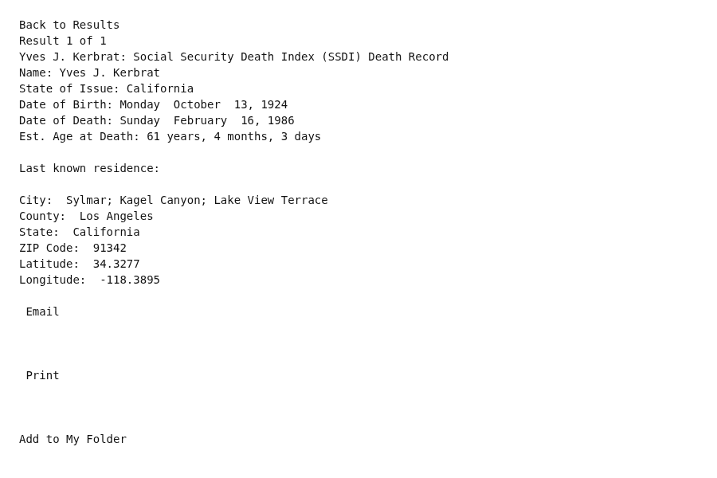

Yves John Kerbrat 1924–1986
Grandfather of Shayla Nadah Alamdari, wife of Peter.
Yves John Kerbrat was born on 13 Oct 1924 in United States1,2, the son of François Kerbrat and Ozanna L'Herreaux Kerbrat8,9. He died on 16 Feb 1986 in Los Angeles, California, United States6,7.
Family
- Parents
- François Kerbrat b. 1881 and Ozanna L'Herreaux Kerbrat b. 1896 documented
- Partner
- Carol May Nolen b. 1934
- Children
- Jeanne Marie Kerbrat b. 1964 documented
Life events
| Event | Date | Place and details |
|---|---|---|
| Born | 13 Oct 1924 | United States1,2 |
| Lived | 27 Apr 1926 | Roseville, Michigan, United States3 |
| Lived | bet 1936 and 1950 | California, United States4 |
| Military service | bet 15 Oct 1950 and 23 Jun 1952 | United States United States Army: entered 15 October 1950, released 23 June 1952 — the Korean War, from four months after it began to a year before the armistice.5 |
| Died | 16 Feb 1986 | Los Angeles, California, United States6,7 |
Records

Sources
- Peter's tree, danenberg.sql, 2007–2015, personae 177, birth.
- KERBRAT, YVES.
KERBRAT, YVES, also known as YVES J KERBRAT, was born 13 October 1924, was assigned Social Security number 559-18-4795 (indicating California), and died 16 February 1986, while residing in Zip Code 91342-0000. The Social Security field office at VAN NUYS CA received the claim 29 November 1975.
Born 13 October 1924. Social Security number 559-18-4795, issued in California. He had no dates at all in the tree.
- KERBRAT, ADRIEN F (born 27 April 1926 in Roseville, Michigan).
KERBRAT, ADRIEN F was born 27 April 1926 in ROSEVILLE, Michigan, son of FRANK KERBRAT (father) and OZANNA LHEUREUX, was assigned Social Security number 559-18-4798 (indicating California), and died 24 December 2000, while residing in Zip Code 92363.
Inferred to have lived at age 1 with his parents François (Frank) Kerbrat and Ozanna Lheureux in Roseville, Macomb County, Michigan when his younger brother Adrien F. Kerbrat was born there on 27 April 1926 (eighteen months after Yves's 13 October 1924 birth).
- KERBRAT, YVES J & KERBRAT, FRANK (California SSN & Santa Monica field office).
KERBRAT, YVES, also known as YVES J KERBRAT, was born 13 October 1924, was assigned Social Security number 559-18-4795 (indicating California), and died 16 February 1986, while residing in Zip Code 91342-0000. … KERBRAT, FRANK … The Social Security field office at SANTA MONICA CALIF received the claim 22 July 1952.
Moved with his parents and brother Adrien from Michigan to California (where his parents filed Social Security claims at the Santa Monica field office in 1952 and 1956), and he and Adrien were issued sequential California Social Security numbers (559-18-4795 and 559-18-4798) prior to his 1950–1952 Korean War US Army service.
- KERBRAT, YVES J (Social Security number 559-18-4795).
KERBRAT, YVES J (Social Security number 559-18-4795) was born 13 October 1924, entered the United States Army 15 October 1950, was released 23 June 1952, and he died 16 February 1986.
United States Army: entered 15 October 1950, released 23 June 1952 — the Korean War, from four months after it began to a year before the armistice.
- Yves J. Kerbrat: Social Security Death Index (SSDI) Death Record.
Name: Yves J. Kerbrat State of Issue: California Date of Birth: Monday October 13, 1924 Date of Death: Sunday February 16, 1986 Est. Age at Death: 61 years, 4 months, 3 days Last known residence: City: Sylmar; Kagel Canyon; Lake View Terrace County: Los Angeles State: California ZIP Code: 91342
Social Security Death Index record: Yves J. Kerbrat, born Monday, 13 October 1924, died Sunday, 16 February 1986 (age 61 years, 4 months, 3 days); SSN issued in California; last known residence ZIP 91342 (Sylmar / Kagel Canyon / Lake View Terrace, Los Angeles County, California).
- KERBRAT, YVES.
… and died 16 February 1986, while residing in Zip Code 91342-0000.
Died 16 February 1986, aged 61, living in ZIP code 91342 — Sylmar, in the north-east San Fernando Valley. His Social Security claim had been filed at the Van Nuys field office on 29 November 1975. Jeanne would have been 21 or 22; Shayla was four months old.
- Peter's tree, danenberg.sql, 2007–2015, parentages 112.
- Household of Frank Kerbrat and Ozanna Kerbrat, Roseville, Macomb, Michigan, 1930 US Census.
Name: Yves Kerbrat | Birth Year: abt 1925 [abt 1925] | Gender: Male | Race: White | Age in 1930: 5 | Birthplace: Michigan | Marital Status: Single | Relation to Head of House: Son | Home in 1930: Roseville, Macomb, Michigan, USA | Map of Home: Roseville, Macomb, Michigan | Street Address: Lowell Street | House Number: 1339 | Dwelling Number: 20 | Family Number: 20 | Attended School: No | Father's Birthplace: France | Mother's Birthplace: Canada | Neighbors: View others on page || Household: Frank Kerbrat 48 Head; Ozanna Kerbrat 33 Wife; Aline Kerbrat 8 Daughter; Arthur Kerbrat 6 Son; Yves Kerbrat 5 Son; Aldrien Kerbrat 3 Son; Louise Kerbrat 0 Daughter; Rena Lehto 22 Servant
father: François Kerbrat; mother: Ozanna L'Herreaux Kerbrat